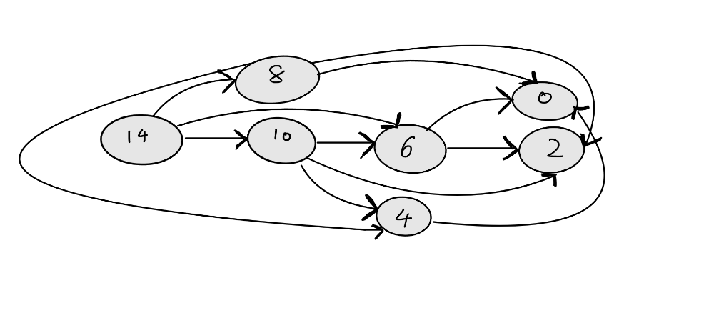

We have a knapsack of capacity weight $C$ (a positive integer) $n$ types of objects.
Each object of the ith type has weight $w_i$ and profit $p_i$
(all $w_i$ and all $p_i$ are positive
integers, $i = 0, 1, …, n-1$).
There are unlimited supplies of each type of objects.
Find
the largest total profit of any set of the objects that fits in the knapsack.

We can see that there are a lot of redundant
calls
for example we call P(0) 3 times.
dp[i][j] mean maximum profit of bag capacity j after considering i objects.
dp[i][j] = dp[i-1][j] means we don't take object i into our bag
dp[i][j] = dp[i][j-w[i]]+p[i] means we take object i into our bag if w[i] $\leq$ j
We convert from 2 dimensions array to 1 dimensions since only current state.
Therefore the memory is reduce from O(nC) to O(C)
$w[i] = {4,6,8}$
$p[i] = {7,6,9}$
$w[i] = {4,6,8}$
$p[i] = {7,6,9}$
result = 21
$w[i] = {5,6,8}$
$p[i] = {7,6,9}$
$w[i] = {5,6,8}$
$p[i] = {7,6,9}$
result = 16